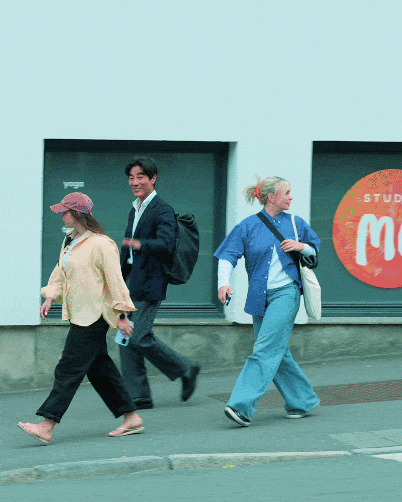
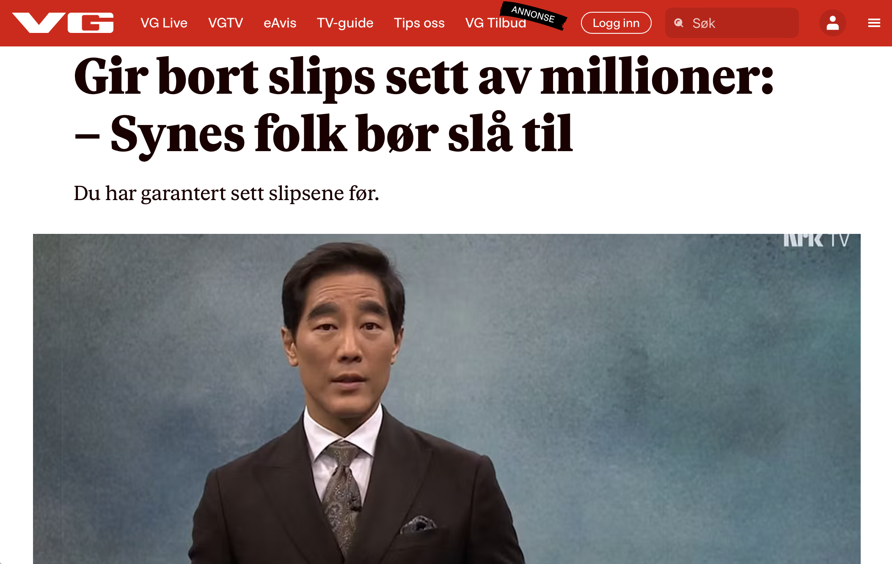
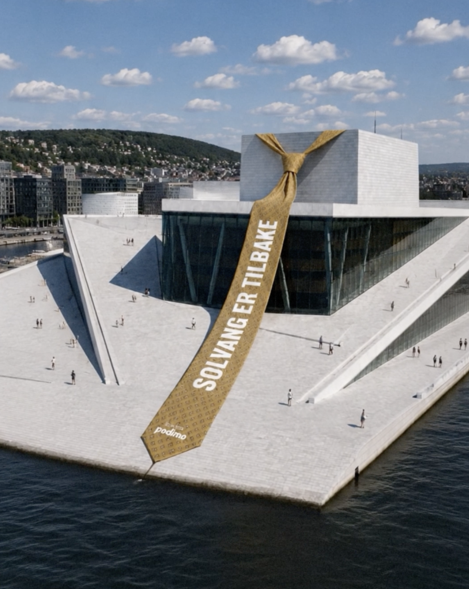
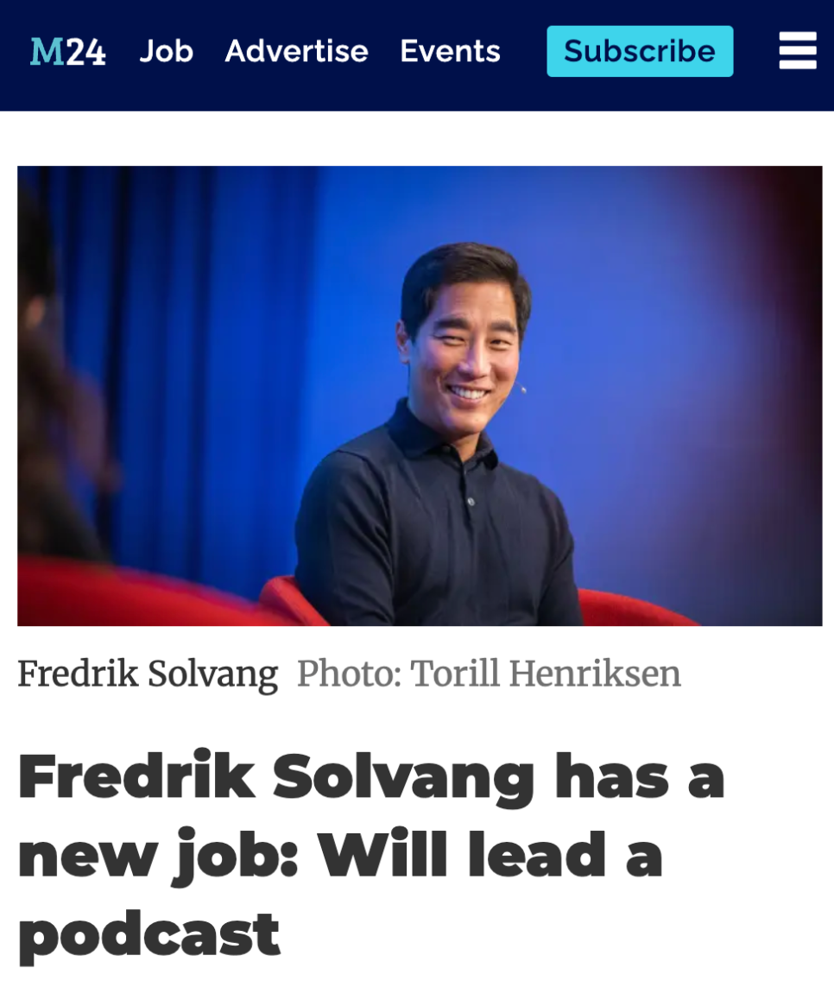
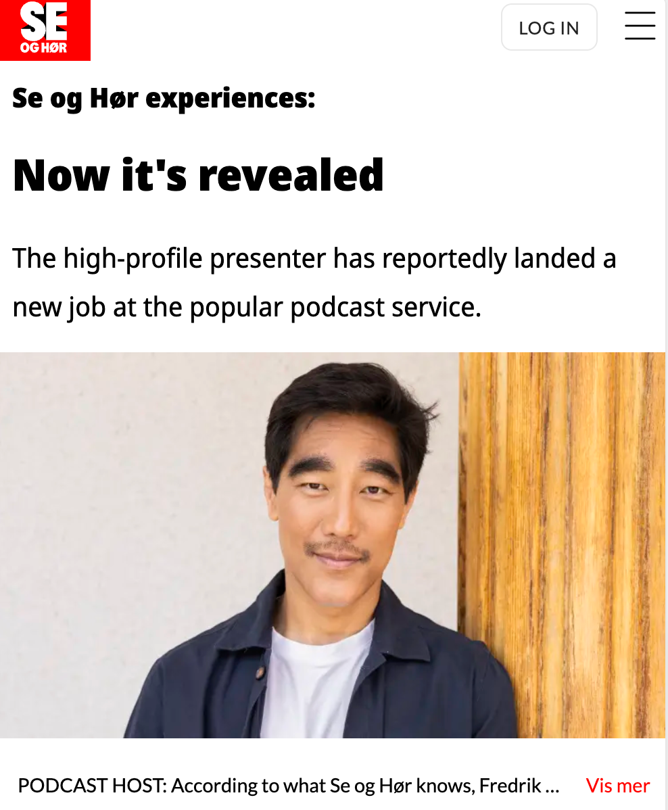
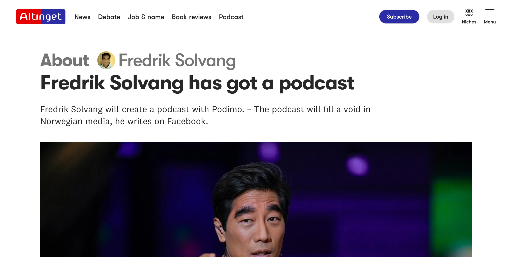

Starting with this one.
When Norway's most famous political interviewer left the national broadcaster after nearly a decade fronting its flagship debate, the whole country spent months guessing his next move. The launch campaign didn't announce over that speculation. It became it.
Fredrik Solvang's next move was already a national story before a single asset shipped. Feared by politicians and loved by audiences across years of live political television, his departure from the national broadcaster left a question the whole country kept asking. Most launches spend their budget buying attention; this one inherited it, and the creative challenge was to spend that inheritance well.
The strategy: don't resolve the mystery, ride it. Every layer of the campaign was designed to feed the speculation before paying it off.
The show sharpened the stakes. Duellen is a weekly video podcast built on one conflict per episode, two opponents, one on one, with the unfiltered intensity public broadcasting can't allow. The positioning in two words: unfiltered authority. Or as the launch out-of-home put it: the debate is over, the duel has begun.
Phase one leaned into tabloid mechanics: staged paparazzi photos of Solvang, seeded as leaks, igniting exactly the "what is he doing with Podimo?" conversation the country was primed for. Phase two answered with the hero film: a series of fictional pitches in which Norway's biggest politicians and best-known profiles appear in roles wildly outside their comfort zones, auditioning ideas at Solvang, until he cuts through and reveals the real next step. Duellen.
The rollout itself behaved like content. The campaign's channel launched disguised as a Solvang fan account, renamed as the show's editorial account only at the reveal. His signature tie became the campaign's icon: paparazzi captions asking where it went, the famous collection given away for free on Finn, Norway's classifieds site, in a perfectly deadpan listing (used regularly over several years, mainly Tuesday and Thursday evenings, still in good condition), and ties planted on landmarks across Norway to announce he's back. The giveaway made national news within hours, Solvang telling the press the ties "have served their purpose", with no brand mentioned anywhere. The tie is the strategy in miniature: the suit was his broadcast uniform, and the campaign strips it off on the way to a sharper, off-the-clock Solvang. And the hero film released as a serial, an episode a day, each dropping with behind-the-scenes cut in native social formats and collab posts from the featured politicians themselves.
The casting is the flex: the very politicians he made sweat on live television, now playing along on his launch. That only happens when the talent, the platform, and the relationships are strong enough to carry it.


The hero film is a single piece of a full tentpole architecture running from the first staged paparazzi frame through the press moment of Solvang joining Podimo, the landmark ties, staged internal "leaks" of moodboards and Slack threads, the serialized episodes, and on to unveiling the studio the show is built in, with CRM and out-of-home carrying it beyond social. And it moved at the mandate's speed: idea to finished film in two weeks, with the global creative team and the Norwegian market operating as one unit.



After Show 360 proved the model and Sports scaled it to a vertical, Duellen applies it to a single piece of talent: building a show super-brand around one of Norway's most bankable names, opening a premium society lane for the platform alongside its entertainment core, and using culture's own curiosity as the media plan.
And it's measured like a product: creative variants tested down to the wardrobe, and brand linkage tracked so the star lifts the platform rather than eclipsing it.

What the launch demonstrated, with the campaign live now: